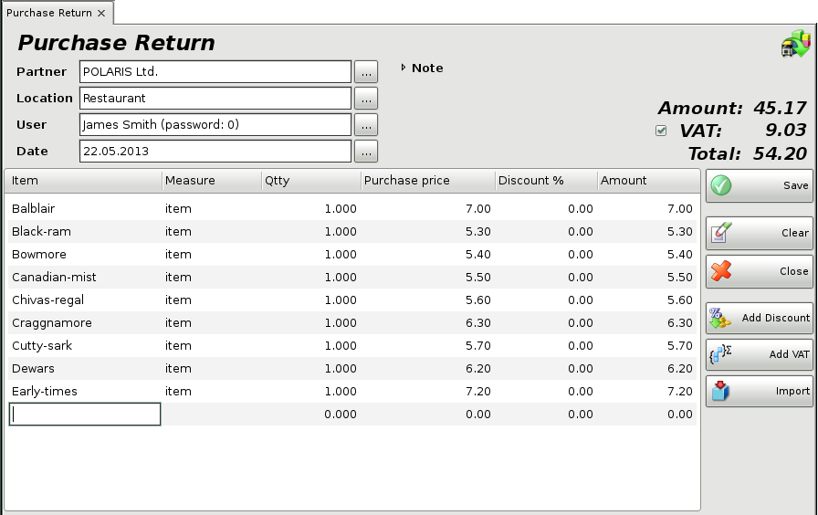
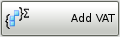
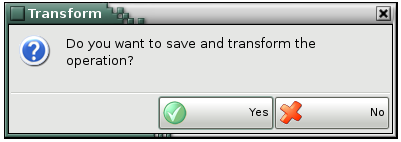
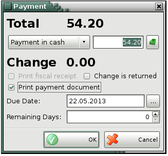

button.
button.Purchase Return
Purchase Return is an operation, which returns the items from your warehouse to the supplier. The function is similar to a sale � it decreases the quantity of the items in the warehouse, forms financial income in the till, but it doesn�t make changes in the purchase and sale price of the items

If you wish to select more than one item, open the items list by pressing the F4 key, hold down the Ctrl key and click the desired items. You can select adjacent items by holding down the Shift key and using the arrow keys.
In the Qtty column fill in the number of items being purchased. Press Enter to move on to the Sale Price column and fill in the sale price of the item (if no price group has been selected). Press Enter to confirm. The application automatically fills in the Amount column. Use the same method to enter data about each item returned by the customer. To save the document, press the F9 key. To cancel the operation, press the Esc key.
If you are working with prices with VAT included, but wish to enter sale prices of items without VAT, to save the data correctly in the database, select  button and the prices will be automatically recalculated.
If you are working with prices without VAT and you enter prices with VAT
included, the application will automatically recalculate the prices
using button.
Through the button Import, you can select the file, which will be imported in the program. This file contains all the items and their parameters for the operation.

Through the button Transform the particular purchase return might be transformed in other operation.

If you are working with lots, you may enter a lot number, a serial number, manufactured and expiration dates and the location of each lot in the warehouse in the purchase window. You can open the Calendar window by pressing the F4 key, when filling the Expiration Date and Manufactured Date fields. In case you do not provide lot information, the Lot column is filled in automatically with "NA".

When you save the operation, the application may offer you to print the return document, depending on the Print Settings.

Then you may specify the payment type and whether the document (or part of it) is paid or remains due.
�2006-2015 Microinvest, All rights reserved